France, Germany and the EU flag
The German flag grew east towards the French tricolour. Before the flags touched, a participant had already suggested what might go between them. Over the next twelve hours, an appeal to stop, a call for annexation and a plan for a European flag competed for the same pixels.
Follow the canvas
Step through 12 views of the same patch, from the opening scene to the close of the canvas.
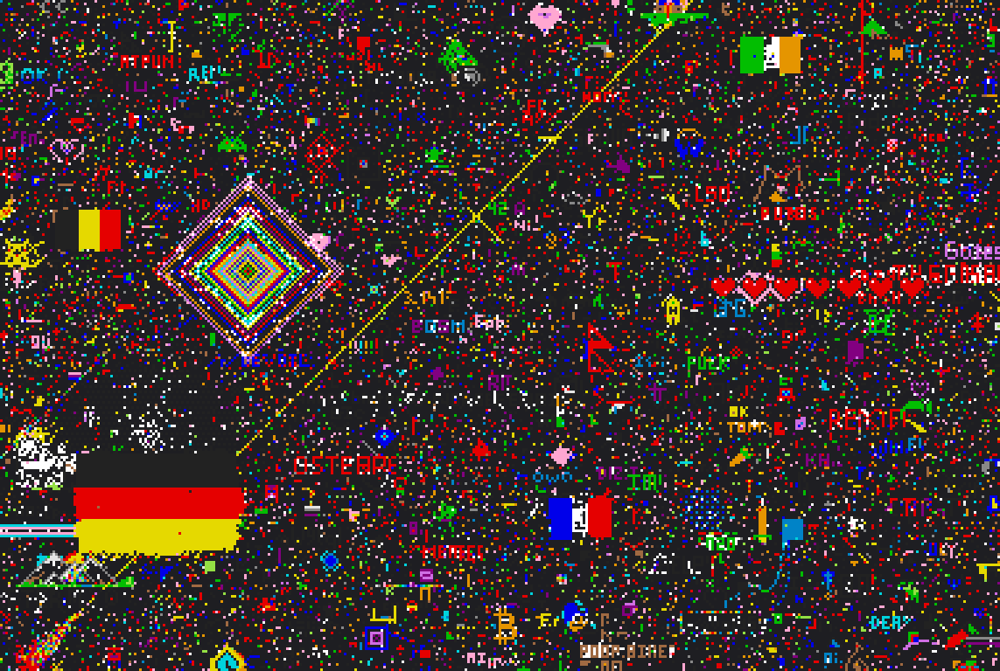
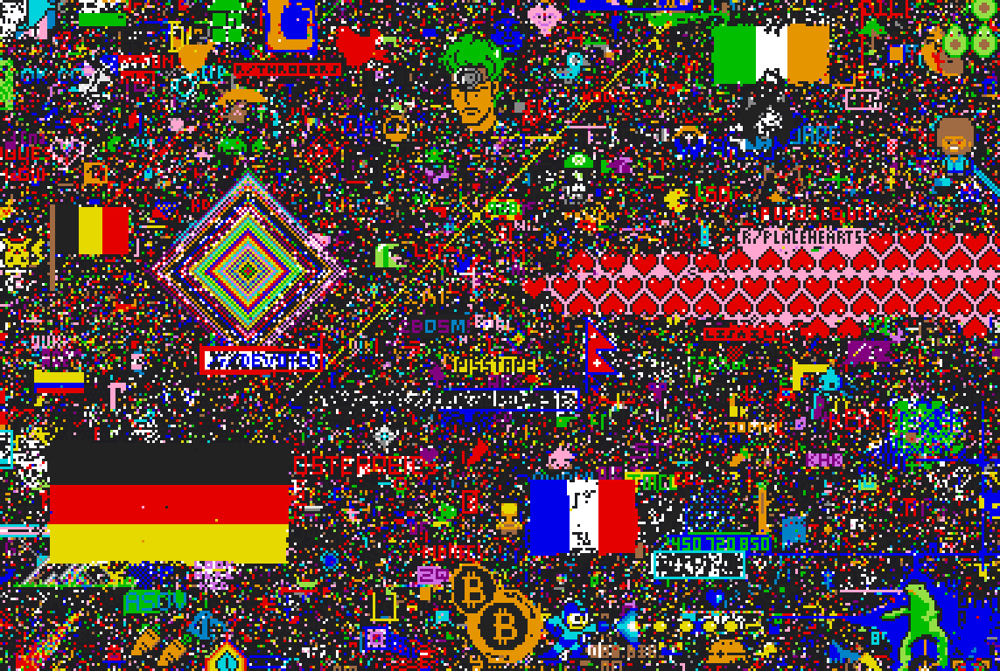
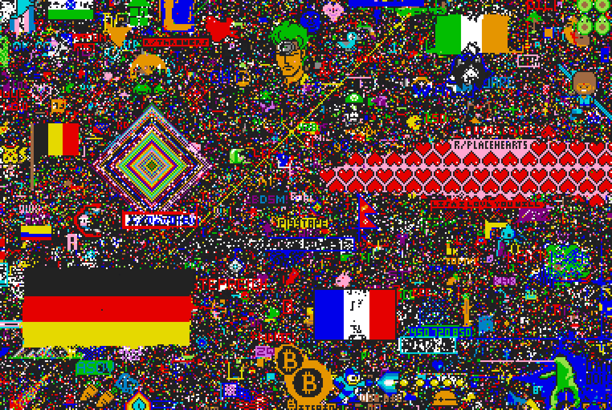
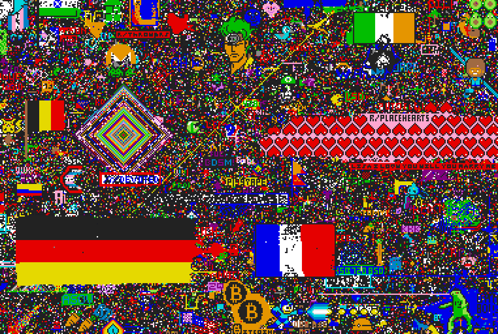
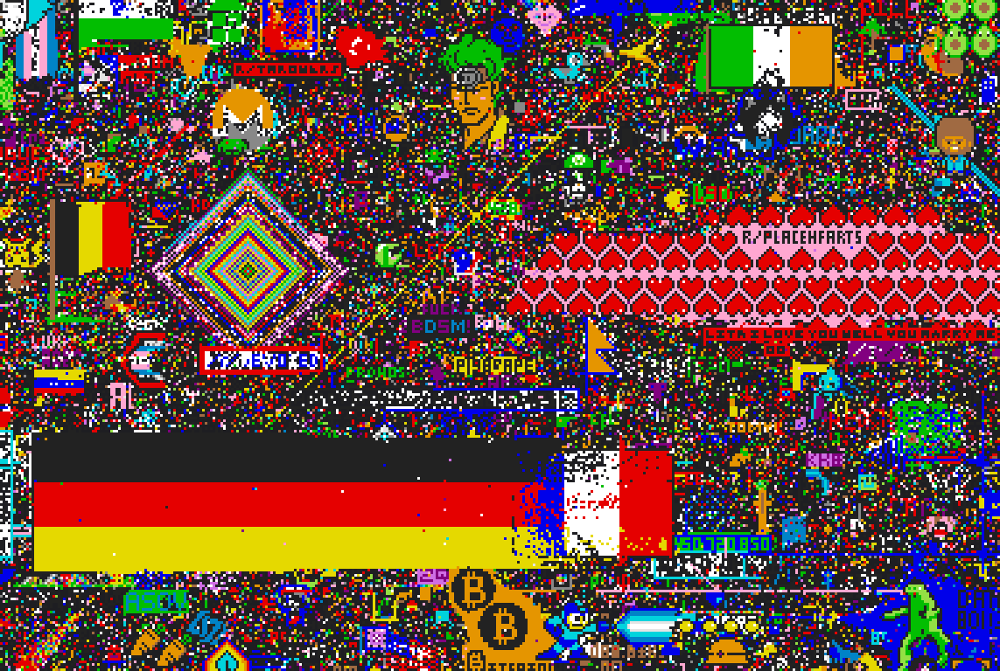
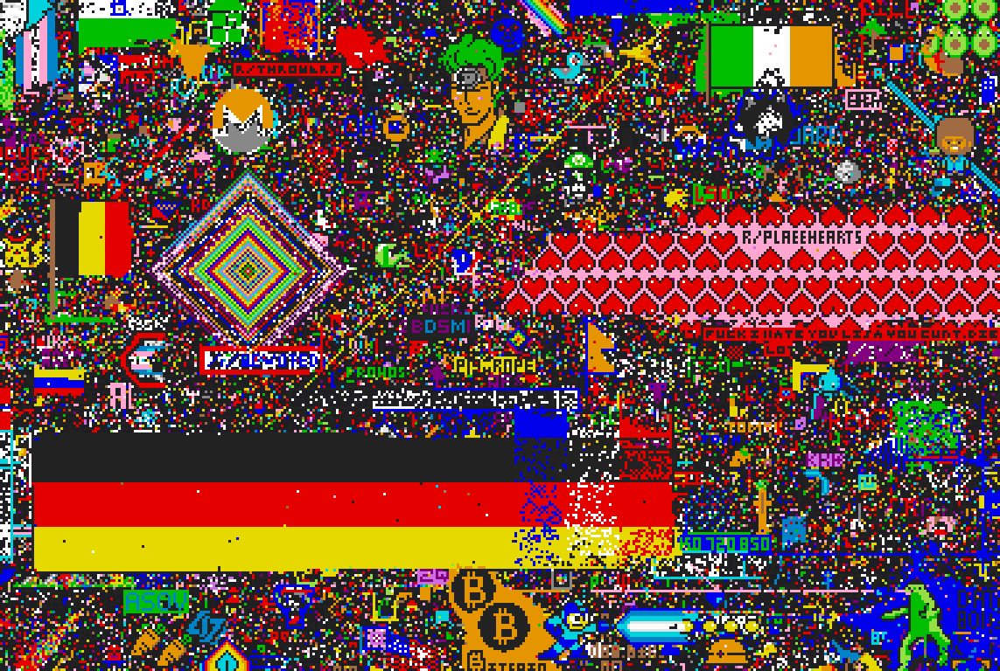
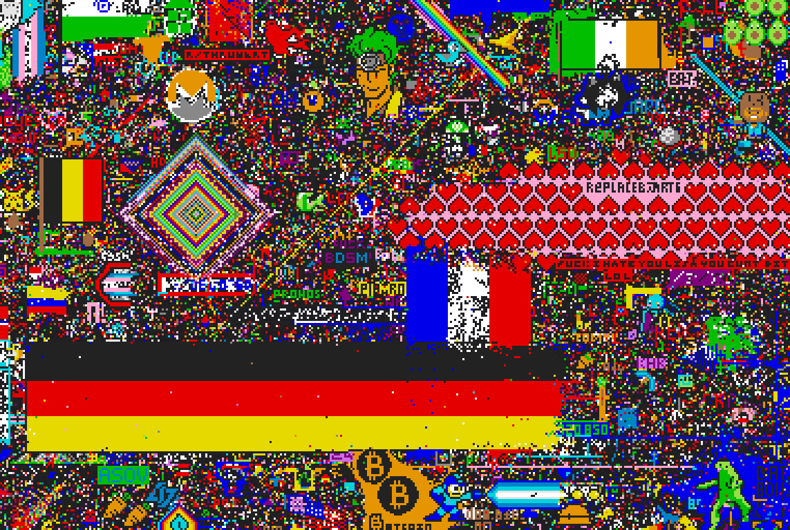
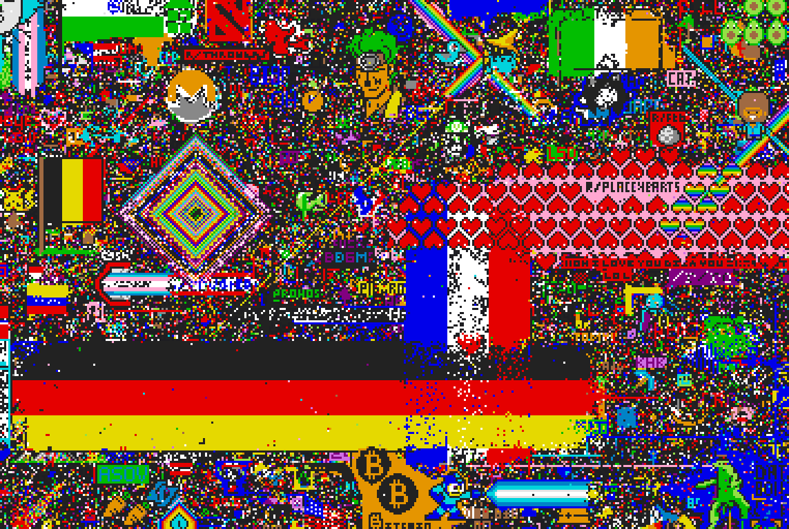
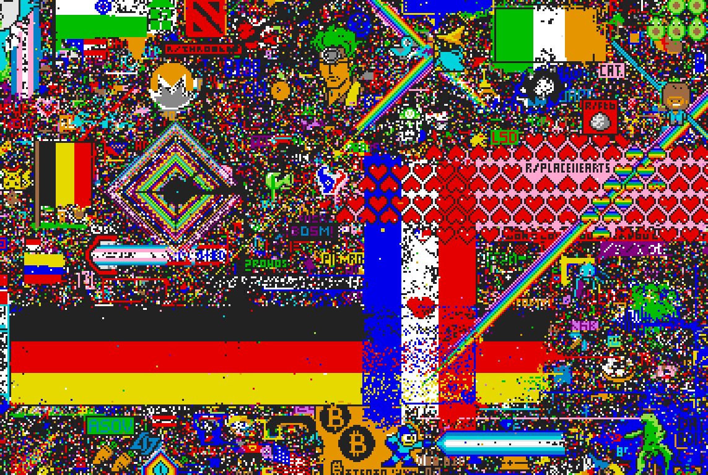
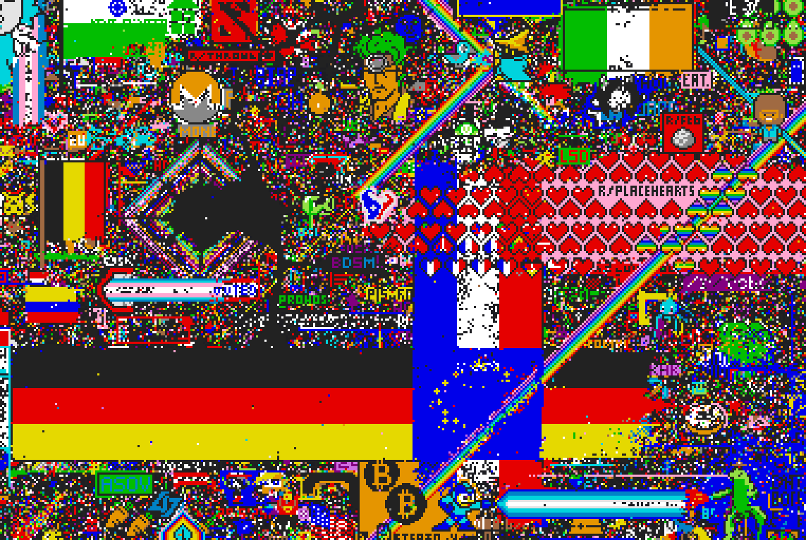
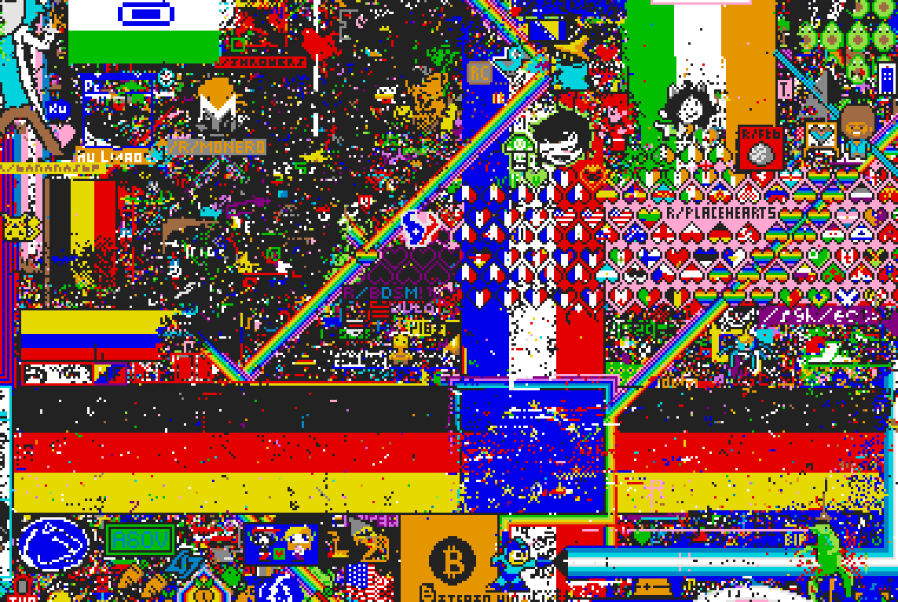
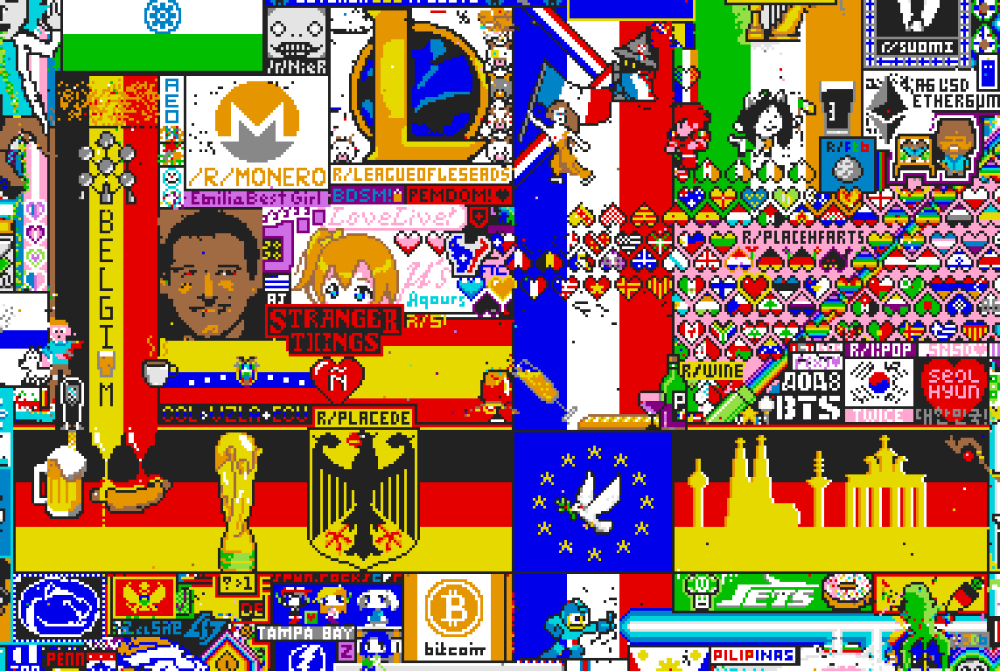
What happened
A shared flag is proposed before the collision
As the two tricolours grew, a post in r/de proposed a European flag between them. About two hours later, a plea from the French side appeared in r/de. Minutes after that came a call for annexation. Participants in r/europe circulated the competing plan for a shared flag.
See frame C · The early European flag proposal · The French appeal in r/de · Operation Annexation · The proposal in r/europe
The German stripes cross, and French builders regroup
By 13:00 UTC on 1 April, German stripes covered the blue third of the French flag. An hour later only a red and white remnant remained at the crossing. In r/france, builders proposed rebuilding directly above it. Meanwhile some r/de participants challenged the attack or offered to help the French move.
See frame F · The plan to rebuild above the crossing · The disagreement in r/de · The offer to help rebuild
The crossing becomes a shared emblem
The French tricolour reappeared above the German one. Builders then used dark blue for the overlap and placed a ring of yellow stars. At 20:31 UTC, r/de carried a report that the joint design had succeeded. It still needed repairs that night. By the close, a white dove occupied its centre.
See frame J · The joint building thread · The plan for the overlap · The report of success · The later call for repairs
How quickly did the crossing turn blue?
| Time (UTC) | Dark blue |
|---|---|
| 18:00 | 28.7% |
| 19:00 | 48.0% |
| 20:00 | 83.9% |
The French and EU flags used the same dark blue. The ring of stars and the posts calling for an EU flag help identify what the builders were drawing. Between 17:30 and 21:00 UTC on 1 April, the French-room group placed 1,000 dark-blue pixels in the overlap. The German-room group placed 1,286.
Check the record
The timeline places the discussions alongside ten-minute counts and dated canvas images. Times marked H on the timeline count from 16:00 UTC on 31 March 2017.
Open the full timeline · Emblem colours by time (TSV) · Placements by phase and colour (TSV) · Placements by posting group (TSV)

The colour shares cover the eventual EU emblem. The pictures show a wider area so readers can also follow both flags. Read the contemporary account in Ars Technica.
Browse the 48 source threads
Threads are listed by posting time. Each title links to the original Reddit discussion.
- · r/deReddit has just started another experiment in the style of r/theButton. This time you can paint pixels on a canvas, and they stay there for 5 min. Let's paint an EU flag.
- · r/deTake /r/place
- · r/francer/france, what are we drawing on r/place?
- · r/deProtect the German flag! At (235, 839)
- · r/francewe have the French flag on r/place! make it bigger!
- · r/deAbsolute domination on r/place!
- · r/franceThe Mission: enlarge and clean the French flag on /r/Place!
- · r/de/r/Place: What about a European Flag between the German & French flags?
- · r/deDear Germany: Stop trying to swallow our Flag on /r/place -France
- · r/deOperation Annexation
- · r/deOperation EU Love
- · r/franceThe Germans are going on the attack
- · r/europeOperation EU love: moving the Europe flag under Franco-German protection / Déplacement du drapeau européen sous protection franco-allemande
- · r/deWe must not take France
- · r/deTrench war on the German-French border
- · r/deNew goal: GERMANY <3 FRANCE on /r/place. Let's bring our neighbours' flag up to our height and protect it.
- · r/europeGotta love this battle.
- · r/franceChange of plan? We rebuild the flag just above the current one.
- · r/deLadies and gentlemen, Mesdames et Messieurs, the Grand Plan! EUnification of /place!
- · r/europeButchery orchestated by the Germans today shall not be nor forgotten nor unpinished!
- · r/deWhat exactly is the reason for which you are actively trying to fuck up the French flag again?
- · r/de/r/place Megathread
- · r/franceFrance is half occupied! We will not capitulate. The best defence is attack.
- · r/deNew plan: help the French move their flag upward.
- · r/europeTHE GERMANS ARE AT IT AGAIN!
- · r/deIdea: we build a transition zone between the flags! That way both can keep expanding in both directions.
- · r/deThe Void - an enemy, an ancient enemy comes from the North. Stop fighting the French and turn your eyes to the real danger, before all of r/place sinks into darkness.
- · r/franceOperation European Love 2.0 [x-post r/de]
- · r/france[PLACE] Alliance with /r/Placeheart: we make the flag (with the Cross of Lorraine) but we don't go past parallel 771
- · r/franceLet's not waste pixels any more. Europe is the plan.
- · r/francePeace treaty / Friedensvertrag
- · r/franceFR DE EU <3
- · r/europeA common solution? // A solution for all?
- · r/franceLANDING AT 19:44
- · r/deThe overlap between DE and FR must become the EU flag!
- · r/franceFrance is winning!
- · r/europeShift of focus on France/Germany, many from r/de and r/france already trying to draw the EU flag - far better chance of completion and maintenance.
- · r/placeDE[CROSSPOST] Europe as the solution to the German-French conflict
- · r/placeDEMain thread: EU flag/the France problem
- · r/europeAbout that EU flag location
- · r/europeHey EU, you can have your flag, but know one thing ...
- · r/franceWith the European flag, we have 1/3 of the French flag ready to be rebuilt
- · r/deOperation EU love successful
- · r/franceAnother theft for France.
- · r/deDestory the European flag, finish off France!
- · r/europeEU Expectations vs. Reality
- · r/placeDEGuide: EU flag
- · r/deOur flag is breaking!